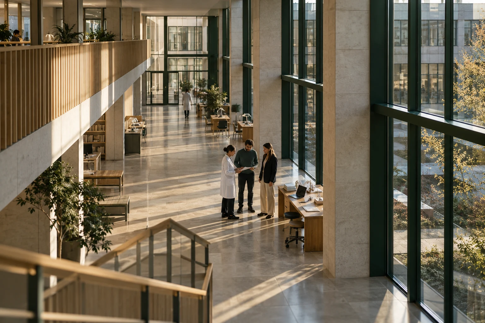

Et rådgiverfællesskab, der skaber resultater i praksis
Se nye muligheder.
Gør dem mulige
i praksis.
Innovation, vækst og forandring.
Fra indsigt til handling.
Mød Virke ↓AI-genereret illustration
Nye muligheder · Bedre beslutninger · Resultater i praksis
Find potentialet.
Vælg en retning.
Skab resultater.
Virke hjælper ledere med at finde nye udviklingsmuligheder og gennemføre nødvendige forandringer.
I får et stærkere grundlag for at vælge, hvor I vil investere, hvem I skal samarbejde med, og hvad der skal ændres for at skabe resultater.
Vi forbinder strategi, økonomi og organisationsdesign med dyb indsigt i, hvordan mennesker og organisationer faktisk arbejder. Det åbner handlemuligheder, som ellers bliver overset, og gør det muligt at udvikle løsninger, der kan gennemføres.
Hvorfor dyb indsigt gør en forskel
Se det, der driver
udviklingen.
Og det, der
holder den tilbage.
Nogle muligheder kræver et nyt partnerskab. Andre kræver en anden arbejdsdeling, en ny prioritering eller bedre betingelser for at udvikle nyt.
Gennem en grundig undersøgelse af strukturer, økonomi og levet praksis får I klarhed over, hvor der kan handles, og hvad der skal til. Så kræfterne kan sættes ind dér, hvor de gør en forskel.
Vores faglige tilgang ↓To områder · Et fælles fagligt afsæt
Stærkere innovation.
Et sundhedsvæsen,
der kan mere.
I innovationsmiljøer skal viden, kompetencer og kapital finde sammen om nye muligheder. I sundhedsvæsenet skal ressourcerne række til bedre patientforløb og nye krav. Begge steder får I hjælp til at finde handlemulighederne, træffe de afgørende valg og føre dem ud i livet.
01 / Innovation og partnerskaber
Find potentialet.
Forbind kompetencerne.
Skab grundlaget
for vækst.
Få mere udvikling ud af viden, idéer og kapital gennem stærkere innovationsmiljøer og partnerskaber.
I får hjælp til at finde nye muligheder, kvalificere samarbejder og forbedre de betingelser, der skal få innovation og videnbaseret iværksætteri til at vokse.
Virksomheder, videregående uddannelser, investorer og offentlige organisationer bringer forskellige kompetencer og interesser. Når de forbindes om en konkret opgave, opstår et stærkere grundlag for afprøvning, investering og nye løsninger.
RammevilkårFjern barriererne.
Åbn flere muligheder.
Få klarhed over, hvordan rammer, incitamenter og organisering påvirker innovation. Og prioritér de ændringer, der kan gøre det lettere at få adgang til viden, kapital, afprøvning og samarbejdspartnere.
Hvad får I et grundlag for?
At udvikle en fælles retning for innovationsindsatsen, afklare aktørernes roller og vælge konkrete forbedringer af rammevilkårene. Med ansvar, ressourcer og opfølgning knyttet til de valgte indsatser.
Gør mødet til starten
på noget, der kan vokse.
Skab konstruktive møder mellem iværksættere og investorer med relevante deltagere, afklarede forventninger og en forståelse af hinandens perspektiver. Så parterne kan vurdere potentialet og tage næste skridt.
Hvad får I et grundlag for?
At forbinde de rette kompetencer, kvalificere dialogen om modenhed og investeringsbehov og følge lovende forbindelser videre mod afprøvning, partnerskab eller investering.
Ambitionen er et innovationsmiljø med bedre muligheder for videnbaseret iværksætteri, vækst og jobskabelse.
02 / Sundhed og organisationsforandring
Find handlemulighederne.
Prioritér ressourcerne.
Gennemfør
forandringen.
Få et stærkere grundlag for bedre patientforløb og en organisation, der kan løse opgaverne inden for de økonomiske rammer.
I får overblik over kapacitet, økonomi og organisatoriske muligheder, så I kan vælge og gennemføre de ændringer, der er nødvendige. Det kan handle om kortere ventelister, budgettilpasning eller mere behandling tæt på borgerne.
Strategi, økonomi og kapacitetSe, hvor I kan handle.
Forstå, hvad valgene kræver.
Få et samlet blik på aktivitet, bemanding, patientforløb og økonomi. Koblet med indsigt i de kliniske arbejdsgange giver det et grundlag for at prioritere og vælge en organisering, der kan fungere.
Hvilke opgaver kan det handle om?
Budgettilpasning, afvikling af ventelister, bedre anvendelse af kapacitet og organisering af kliniske afdelinger eller laboratorier.
Det kan også være at flytte behandling tættere på borgerne og gøre specialisternes viden tilgængelig på tværs af hospitaler, almen praksis og kommuner, blandt andet gennem digitale løsninger og nye rådgivningsfunktioner.
Skab en løsning,
organisationen kan bære.
Få ledelsens ambitioner og medarbejdernes erfaringer i spil om den samme opgave. Nye arbejdsgange og samarbejdsformer udvikles og afprøves, så problemer kan opdages og løsninger justeres undervejs.
Hvad skal være anderledes bagefter?
At ansvar og arbejdsdeling er tydelige. At forandringen giver mening i det daglige arbejde. Og at organisationen selv kan følge op, justere og håndtere de næste ændringer.
Vores faglige afsæt · Strategi, organisation og levet praksis
En strategi skal
kunne leve i den
organisation, den
er skrevet til.
De bedste handlemuligheder bliver synlige, når man forstår, hvad der driver og begrænser organisationen.
Derfor undersøger vi både strukturerne, økonomien og den levede praksis. Vi afdækker forskellige problemforståelser, finder uudnyttede kompetencer og udvikler løsninger sammen med dem, der skal få dem til at fungere.
Det fænomenologiske afsæt betyder, at menneskers konkrete erfaringer bliver undersøgt grundigt. Deres akkumulerede viden om arbejdet kobles med data og strukturelle analyser, så løsningerne bygger på en præcis forståelse af virkeligheden.
Ambition, afprøvning og gennemførelse udvikles i vekselvirkning. I beholder styringen og bliver bedre i stand til selv at handle, også når vi har forladt organisationen.
“Strategi er et mønster i en strøm af beslutninger.”Henry Mintzberg, 1978 · Egen oversættelse · Kilde ↗
Rådgiverfællesskabet
Erfarne rådgivere.
Direkte på jeres opgave.
I arbejder direkte med erfarne rådgivere, som forbinder sociologisk indsigt med erfaring fra innovation, offentlig ledelse og udvikling af sundhedsvæsenet.
Marius Sylvestersen
Innovation · Partnerskaber · Iværksætteri
Erfaring med innovation og systemiske forandringer. Bidrager med blik for nye muligheder og samarbejder på tværs af virksomheder, videnmiljøer og offentlige organisationer.
Marius på LinkedIn ↗Rune Bang Puggaard
Sundhed · Strategi · Organisationsforandring
Sociolog med mere end 18 års erfaring fra offentlig ledelse og rådgivning. Arbejder med sundhedsvæsenets strategi, organisering, kapacitet og implementering. Tidligere leder i Københavns Kommune.
Erfaring fra opgaver og samarbejder, som rådgiverne bringer med sigTechBBQKøbenhavns UniversitetRigshospitaletKøbenhavns Kommune